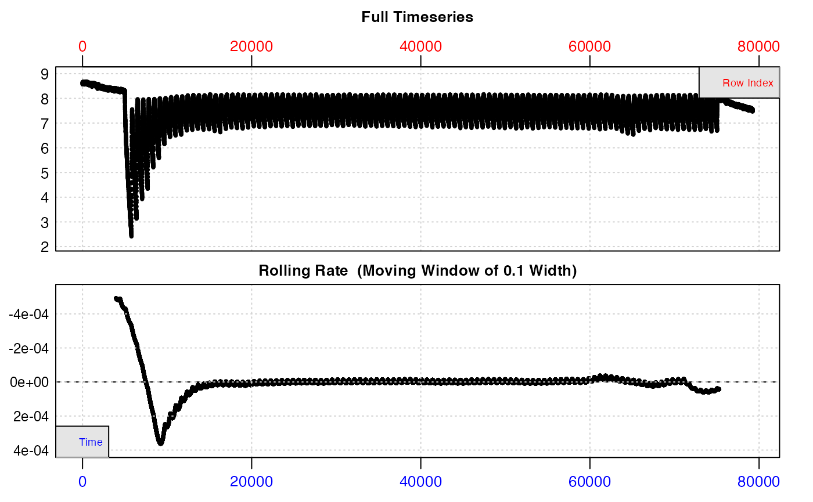
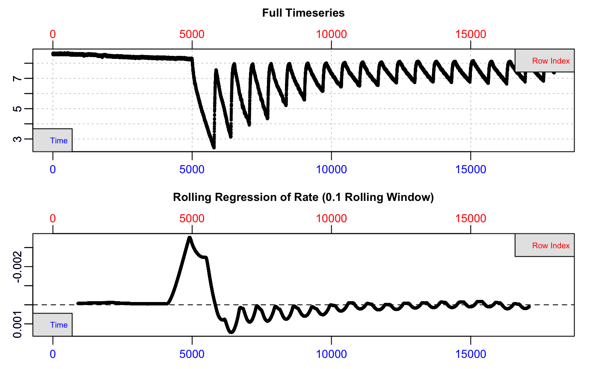
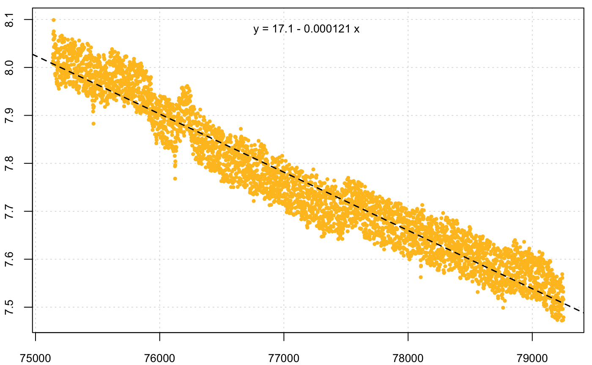
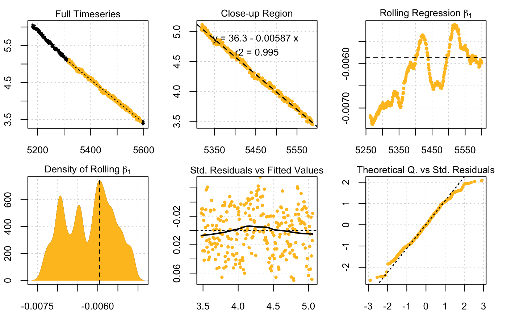
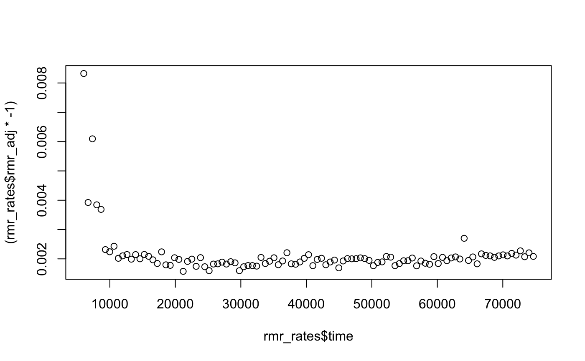

vignettes/intermittent2.Rmd
intermittent2.RmdThis vignette shows a more complex intermittent-flow analysis from a lengthy experiment, with numerous replicates of equal duration (except the first one) and a background rate that changes over the course of the experiment. This type of experiment is one many fish physiologists in particular will be familiar with. respR will in the future support these experiments in a much better way, but for now they are easily analysed with a little data manipulation.
The example data (zeb_intermittent.rd) has kindly been provided by Davide Thambithurai (University of Glasgow), and is from an experiment on a zebrafish. Note, the data has been injected with random noise, and volumes and masses used are not the actual values from the experiment.
From this experiment dataset we want to extract several metrics:
Pre- and post-experiment background rates. Background rates were recorded at the start and end of the experiment (initial and end sections with shallow slopes). Because this is a lengthy experiment, in high temperatures, the microbial background rate actually increases over the course of the experiment. We will assume this increase is constant (i.e. linear) over the course of the experiment, and each replicate will be corrected with a background rate calculated according to where it occurs along the experiment (i.e. later replicates will be corrected by a greater amount).
Maximum metabolic rate (MMR). Before this experiment, the fish has been exercised to exhaustion, then placed in the respirometer, so the first replicate during which it is recovering from this exercise will represent MMR. This replicate is 14 minutes duration (13 minutes recording, 1 minute flushing), all the other replicates are 11 minutes in duration (10 minutes recording, 1 minute flushing). See ?zeb_intermittent.rd for row locations of all stages.
Routine metabolic rate (RMR). This will be calculated from the later replicates once the animal has recovered and is using oxygen only to fuel basal metabolism and minor, spontaneous movement.
We use inspect() to preview the data and save it to an object. This is a very large dataset (nearly 80,000 records), so if running the code in this vignette be warned that operations may take some time.
zeb <- inspect(zeb_intermittent.rd)
Because this is a lengthy experiment, the data is too dense to inspect easily from the plots. Here we’ll inspect a portion at the start to illustrate the structure.
inspect(zeb_intermittent.rd[1:18000, ])
The top plot shows the initial background recording, then experimental replicates where O2 decreases, separated by regular flushes where it increases back to ambient levels. The bottom plot (a rate over a rolling window of 10% of the entire data), is not really useful as this window will cover several different replicates, but we can clearly see rates are higher at the start of the data.
The intial and end sections will be used to calculate background rates, and how they change over the course of the experiment. Timepoints of these will typically have been recorded as part of the experiment, so can be used to extract the relevant sections (see ?zeb_intermittent.rd for row locations of all stages).
## subset background recordings
backg_start <- subset_data(zeb, from = 0, to = 4999, by = "time")
backg_end <- subset_data(zeb, from = 75140, to = 79251, by = "time")
## Calc initial and end bg rates
bg_start <- calc_rate.bg(backg_start)
bg_end <- calc_rate.bg(backg_end)
The two different background rates (only the end one shown above) have been saved to these two objects. Support for a dynamic background rate within calc_rate.bg() is in our future development plans, but for now we can use the two rates to derive a linear relationship for the rate to apply based on time along the experiment. We will use these later to correct rates for background.
## extract bg rates and median timepoints
r1 <- bg_start$bgrate
r2 <- bg_end$bgrate
t1 <- median(bg_start$data$Time)
t2 <- median(bg_end$data$Time)
## fit lm
bg_lm <- lm(c(r1, r2) ~ c(t1, t2))
## extract slope and intercept
bg_lm_int <- coef(bg_lm)[1]
bg_lm_slp <- coef(bg_lm)[2]We will use these later to derive correction values based on time elapsed during the experiment.
Here we calculate MMR using the first replicate. This replicate is longer than the others (14 mins/840 rows vs. 11 mins/660 rows for all others). For this (and the later analyses) we are going to apply a buffer value at the start of each rep. In this experiment, each replicate is comprises a recording period (13 mins for first rep, 10 mins for all others), followed by 1 minute of flushing. It is good practice to allow a period of settling after flushing, in case the animal was disturbed, or the O2 probe has some lag in detecting the O2 concentration or slight temperature difference. For all analyses we are going to use a 3 minute buffer (180s), that is we won’t use the first 3 mins of data in any rep. We will also only use 7 minutes (420 rows) of data after this so the flush period is not used. Here, we subset the first replicate out to a separate object using these parameters, and use auto_rate() to find the most linear section (we could also use the method = "max" option to find the maximum linear rate within this replicate).
## subset rep 1
zeb_rep_1 <- subset_data(zeb, from = 5000 + 180, to = 5000 + 180 + 420, by = "time")## Find most linear section
zeb_mmr <- auto_rate(zeb_rep_1)
#>
#> 3 kernel density peaks detected and ranked.
We also need to adjust the rate for background. We will use the background linear model coefficients from above, with the start time of this replicate to calculate the appropriate background rate to apply (because this is the first replicate we could also just use the background rate we calculated from the initial background recording, i.e. bg_start).
## adjust for background
zeb_mmr_adj <- adjust_rate(zeb_mmr, by = 5180 * bg_lm_slp + bg_lm_int)
#>
#> Rate adjustments applied. Use print() command for more info.
print(zeb_mmr_adj)
#>
#> # adjust_rate # -------------------------
#> Note: please consider the sign of the value while correcting the rate.
#>
#> Rank/position 1 result shown. To see all results use summary().
#> Input rate: -0.00586741
#> Adjustment: -7.586837e-05
#> Adj. rate: -0.005791542That’s it: the MMR has been calculated, adjusted and saved, and we can see from the output plots everything looks good. We will convert it to units at the end of the vignette.
Calculating RMR is a little more complex. Typically, SMR and RMR are defined as the lowest rates observed. What you choose to use will depend on many factors unique to your experiment, whether that be the absolute lowest rate found, or a representative mean of several low rates. The following is merely to show how you can use respR to explore and extract rates from multiple replicates.
Manually specifying the subsetting criteria for each subequent rep would be onerous, but since we know they cycle at 11 minutes (660s) and there are 105 further replicates after the first ends at row 5839, we can use straightforward R syntax. This is information that will have been recorded as part of the experiment.
There are a number of approaches we could use, but here we will show a simple for loop to run auto_rate() for each replicate from the start of the second replicate (at row 5840), with a starting buffer of 3 minutes (180s), until 7 minutes (420s) later. These data have O2 recorded once per second, so row numbers can be used like this, but it will depend on the time data units used. For this example, we need to specify the original dataframe saved within the zeb object we created using inspect() (i.e. zeb$dataframe) for the R subsetting syntax to work.
Again, a number of approaches could be used to subset data or iterate the functions to analyse these types of experiment; this is merely a simple example to illustrate how respR can be easily iterated over multiple replicates (a more succinct example is at the end of this vignette). Note, for simplicity, we will extract and save only the rate value found. Best practice would be to save the auto_rate() object for each iteration of the loop (i.e. each replicate) in a list object (see eg. at end). We also save the start time of each rep to use later to calculate the correct background rate. Also, while it will greatly increase the time taken, for actual analyses it is highly recommended you examine the plot of each iteration, or at very least those that you use. Here in the interests of speed we suppress it with plot = FALSE.
## set start rows for each rep using sequence function (from, to, by)
s_r <- seq(5840, 74480, 660)
## apply buffer of 3 mins/180s
s_r <- s_r + 180
## set end rows for each rep - 7 mins/420s later
e_r <- s_r + 420
## for saving results
rmr_rates <- data.frame()
## loop
for (i in 1:105) {
sr <- s_r[i] # start row
er <- e_r[i] # end row
## find most linear rate in each rep
rmr <- auto_rate(zeb$dataframe[sr:er, ], plot = FALSE)
## save time and rate
rmr_rates[i, 1] <- sr
rmr_rates[i, 2] <- rmr$rate[1]
}
names(rmr_rates) <- c("time", "rmr")## examine
head(rmr_rates)
#> time rmr
#> 1 6020 -0.008414331
#> 2 6680 -0.003999710
#> 3 7340 -0.006187949
#> 4 8000 -0.004246525
#> 5 8660 -0.003727447
#> 6 9320 -0.002378394This rmr_rates dataframe contains the start times and most linear rate found in each rep.
While there is a function in respR for correcting rates for background (adjust_rate), it doesn’t yet support a dynamic background rate (though see example at the end where a formula can be entered in the function if using apply functions). It is in our plans to support this in the future, but for now the rates can be easily corrected using the background correction linear relationship we calculated earlier.
Using the time we saved for each rep we will calculate the appropriate correction factor, and add it to the dataframe.
## use time value with lm slope and intercept to get correction factor
rmr_rates$adj <- rmr_rates$time * bg_lm_slp + bg_lm_int
head(rmr_rates)
#> time rmr adj
#> 1 6020 -0.008414331 -7.640036e-05
#> 2 6680 -0.003999710 -7.681835e-05
#> 3 7340 -0.006187949 -7.723634e-05
#> 4 8000 -0.004246525 -7.765433e-05
#> 5 8660 -0.003727447 -7.807232e-05
#> 6 9320 -0.002378394 -7.849031e-05
tail(rmr_rates)
#> time rmr adj
#> 100 71360 -0.002309671 -0.0001177814
#> 101 72020 -0.002204660 -0.0001181994
#> 102 72680 -0.002400156 -0.0001186174
#> 103 73340 -0.002189404 -0.0001190354
#> 104 74000 -0.002263608 -0.0001194534
#> 105 74660 -0.002188329 -0.0001198713We can see the ultimate correction value is extremely small in comparison to the rate of the specimen, as it should be. We also see it increasing in value in later reps, as it should.
Note, that in respR we have kept rate values as negatives because mathematically they represent depletion of oxygen (although when you come to report these you should change these to positives). So care must be taken when manually using these values to understand the sign and what is being done. Here, to get a final, adjusted RMR rate we subtract the adj value from the RMR rate we calculated.
rmr_rates$rmr_adj <- rmr_rates$rmr - rmr_rates$adj
head(rmr_rates)
#> time rmr adj rmr_adj
#> 1 6020 -0.008414331 -7.640036e-05 -0.008337931
#> 2 6680 -0.003999710 -7.681835e-05 -0.003922892
#> 3 7340 -0.006187949 -7.723634e-05 -0.006110713
#> 4 8000 -0.004246525 -7.765433e-05 -0.004168870
#> 5 8660 -0.003727447 -7.807232e-05 -0.003649375
#> 6 9320 -0.002378394 -7.849031e-05 -0.002299904If we plot these values (we add the * -1 to convert to the usual positive values rates are reported as), we can see after the initial period where the fish was recovering from excercise, the rates stablise. Depending on your experiment, you may choose to average a selection of these to define RMR.
plot((rmr_rates$rmr_adj * -1) ~ rmr_rates$time)
It depends on your experiment how you might want to define your final RMR. The following is just an example where we define it as the mean of the lowest 10th percentile of adjusted rates (again, because rates are negative be careful with the sign - lowest rates are the highest numerically). We can use the quantile function to get the 10% cutoff value, and take the mean of all values lower than this (again careful - it is highest numerically because they are negative).
## 10% quantile cutoff value
co <- quantile(rmr_rates$rmr_adj, 0.9)
## all rates above cutoff value
rt <- rmr_rates$rmr_adj[rmr_rates$rmr_adj > co]
rt
#> [1] -0.001774937 -0.001598904 -0.001761167 -0.001591412 -0.001593165
#> [6] -0.001735911 -0.001775362 -0.001771523 -0.001768999 -0.001767541
#> [11] -0.001762338
## Calculate RMR
zeb_rmr <- mean(rt)
## Convert
convert_rate(zeb_rmr, o2.unit = "mg/l", time.unit = "s", output.unit = "mg/h/g",
mass = 0.001, volume = 0.1)
#>
#> # convert_rate # ------------------------
#> Rank/position 1 result shown. To see all results use summary().
#> Input:
#> [1] -0.001718296
#> [1] "mg/L" "sec"
#> Converted:
#> [1] -0.6185866
#> [1] "mg/hour/g"The MMR value we calculated earlier can also be passed to convert_rate to get the final mass-specific value for this specimen by entering the correct mass (of the fish, in kg) and volume (in L).
Note: the volume is volume of water in the respirometer, not the volume of the respirometer. That is, it represents the effective volume. A specimen might displace a significant proportion of the water, depending on its size. Therefore the volume of water entered here should equal the volume of the respirometer minus the volume of the specimen. It depends on your experiment how you determine water volume. There are several approaches to calculate the volume of a specimen; geometrically, through displacement in a separate vessel, or calculated from the mass and density (e.g. for fish it is often assumed they have an equal density as water, that is ~1000 kg/m^3). Volume could also be determined directly by pouring out the water at the end of the experiment, or by weighing the respirometer. See the respfun utilities package for functions to calculate the effective volume and convert water mass to volume.
## convert
convert_rate(zeb_mmr_adj, o2.unit = "mg/l", time.unit = "s", output.unit = "mg/h/g",
mass = 0.001, volume = 0.1)
#>
#> # convert_rate # ------------------------
#> Rank/position 1 result shown. To see all results use summary().
#> Input:
#> [1] -0.005791542
#> [1] "mg/L" "sec"
#> Converted:
#> [1] -2.084955
#> [1] "mg/hour/g"This final value (typically as a positive) is what we report, or use in further analyses.
The above is a long description with the code expanded to show the analysis in detail, so this vignette may not give a good impression of just how succinct a respR analysis of an experiment like this may be. Here is a code block showing the exact same analysis condensed and using a couple of different R approaches (e.g. using apply functions rather than a loop, and list objects to save results). This could be condensed further still depending on how you determine and apply background rates, and if replicates were completely regular or locations already saved to an R object (and condensed still more if you use Tidyverse syntax, see respR and the tidyverse).
# Import and inspect raw data ---------------------------------------------
## importing would normally be the first step, e.g. import_file("path/to/file")
z_data <- inspect(zeb_intermittent.rd)
# Background calculations -------------------------------------------------
## calculate start and end background, and fit linear model
bg_s <- calc_rate.bg(subset_data(z_data, from = 0, to = 4999, by = "time"))
bg_e <- calc_rate.bg(subset_data(z_data, from = 75140, to = 79251, by = "time"))
## fit lm
bg_mod <- lm(c(bg_s$bgrate, bg_e$bgrate) ~ c(median(bg_s$data$Time), median(bg_e$data$Time)))
## extract slope and intercept
bg_mod_int <- coef(bg_mod)[1]
bg_mod_slp <- coef(bg_mod)[2]
# Calculate rates in each replicate ---------------------------------------
## Set start rows of each replicate (remember, first one is 14 mins, all others 11mins)
sr <- c(5000, seq(5840, 74300, 660))
## apply auto_rate to each rep, from start row (+ 3 mins buffer) to 10 mins (600s) later
z_ar <- lapply(sr,
function(g) auto_rate(zeb$dataframe[(g+180):(g+600),], plot = F))
# Adjust rates for background ---------------------------------------------
## background adjust each rep based on start time of that rep
z_ar_adj <- lapply(z_ar,
function(g) adjust_rate(g, g$df$x[1] * bg_mod_slp + bg_mod_int))
# Convert rates -----------------------------------------------------------
z_rates_final <- lapply(z_ar_adj, function(g) convert_rate(g,
o2.unit = "mg/l",
time.unit = "s",
output.unit = "mg/h/g",
mass = 0.001,
volume = 0.1))
# Extract and define MMR and RMR ------------------------------------------
## MMR = rate from replicate 1
z_mmr <- z_rates_final[[1]]$output[1]
## RMR = mean of lowest 10th percentile of all rates (n.b. numerically highest
## 10th percentile, because of negative sign)
z_all_rates <- sapply(z_rates_final, function(g) g$output[1])
z_rmr <- mean(z_all_rates[z_all_rates > quantile(z_all_rates, 0.9)])We can see we get same values we calculated above.